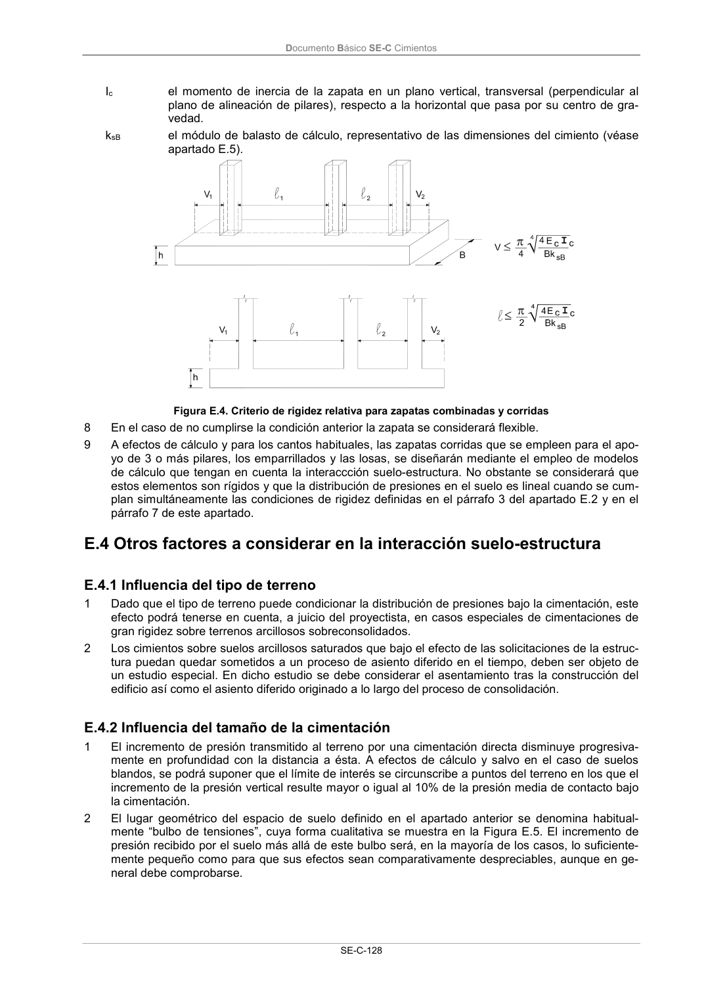

DB-SE-C Cimientos · edición 2019-12-20 · capa oficial
Documento DB-SE-C-oficial · SHA-256 del PDF a71133f4b0dca253e45ea3071c70f2a512354bcc5cd841bf89b1a502f567ac5e
Copia fiel del PDF fuente · Fuente oficial
Ficha de la disposición en la fuente oficial
Formatos: JSON del segmento · Markdown
E.4 Otros factores a considerar en la interacción suelo-estructura E.4.1 Influencia del tipo de terreno E.4.1 Influencia del tipo de terreno 1 Dado que el tipo de terreno puede condicionar la distribución de presiones bajo la cimentación, este efecto podrá tenerse en cuenta, a juicio del proyectista, en casos especiales de cimentaciones de gran rigidez sobre terrenos arcillosos sobreconsolidados. 2 Los cimientos sobre suelos arcillosos saturados que bajo el efecto de las solicitaciones de la estruc- tura puedan quedar sometidos a un proceso de asiento diferido en el tiempo, deben ser objeto de un estudio especial. En dicho estudio se debe considerar el asentamiento tras la construcción del edificio así como el asiento diferido originado a lo largo del proceso de consolidación.
